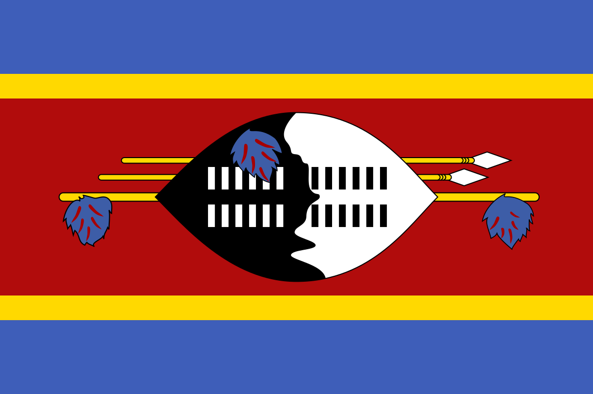

Есваті́ні (англ. Eswatini, раніше Свазіленд), або офіційно Королі́вство Есваті́ні (англ. Kingdom of Eswatini, сваті Umbuso weSwatini), іноді називають Нгване — держава, розташована на південному сході Африки. Площа країни становить 17 364 км² (152 місце у світі). Населення — 1,1 млн осіб (149 місце у світі). Переважну більшість населення країни становить народ свазі. Столиці: міста Мбабане (адміністративна) і Лобамба (законодавча). Переважно рівнинна країна (плато Лоувельд), на заході гори Хайвельд, на сході — Лубомбо. Глава держави й уряду король Мсваті III з 1986 року.
Tериторія Есватіні була заселена людьми ще з доісторичних часів. Предки народу свазі прийшли на південь Африки в середньовіччя, з центральної частини континенту. Спочатку вони влаштувалися на узбережжі Індійського океану, однак у XVIII столітті свазі були витіснені іншими племенами на північ, на територію нинішнього Есватіні. На початку XIX століття свазі вели кровопролитні війни проти зулу та інших сусідніх племен, що здійснювали набіги на землі свазі.
Після англо-бурської війни 1899—1902 років Велика Британія оголосила Есватіні своїм протекторатом, зберігши там владу місцевих королів і вождів. У 1964 році в Есватіні відбулися перші вибори місцевого парламенту. Більшість депутатських місць отримала партія, створена тодішнім королем Собузою II, Національний рух Імбокодво. 6 вересня 1968 року Британія надала повну незалежність королівству Есватіні.